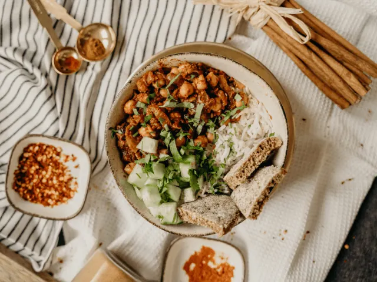
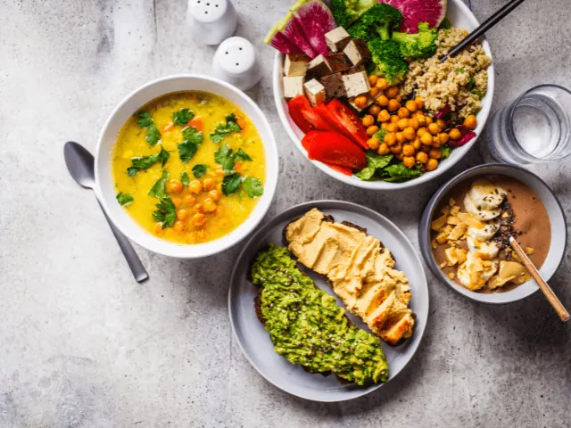
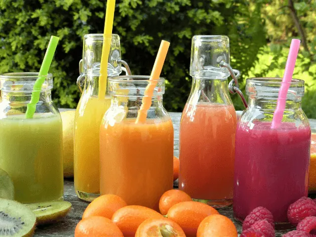
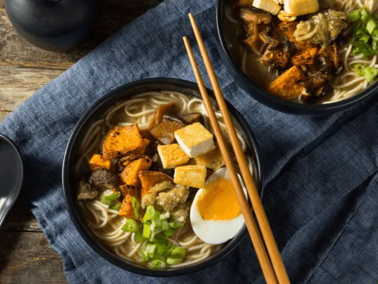
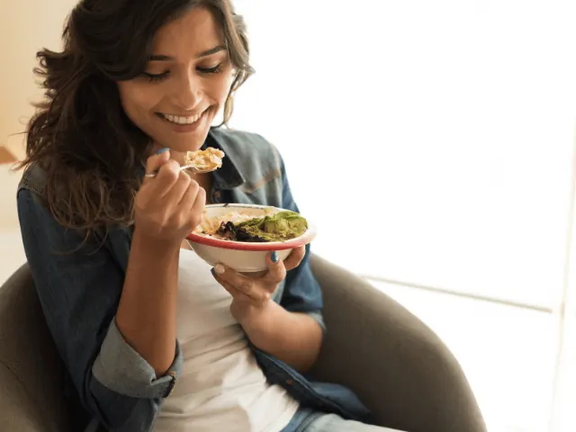
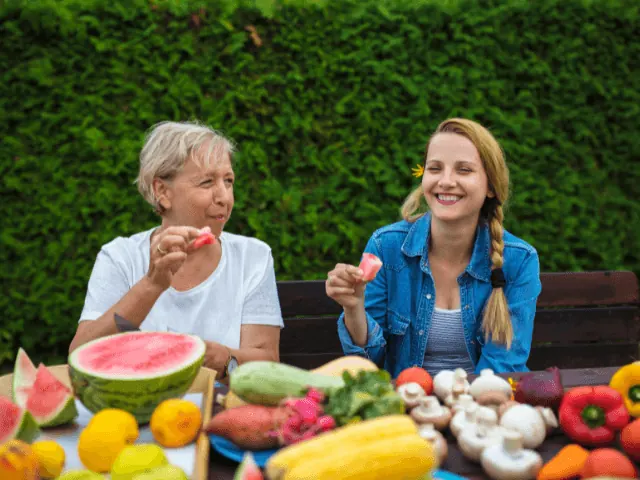
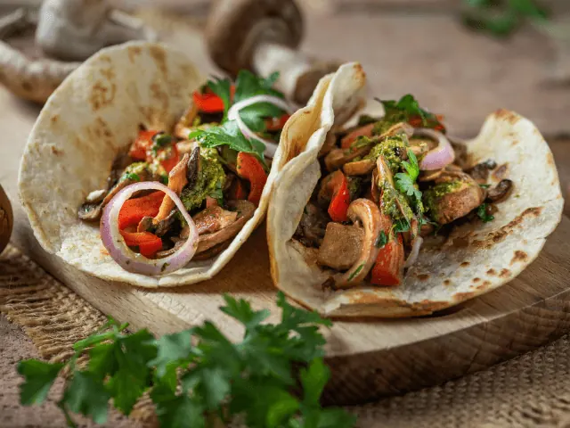

Waar kun je het best vegan uit eten in Nijmegen?
Gepubliceerd op 4 februari 2023, bijgewerkt op 20 oktober 2023
Onderdeel van de gids Restaurants in Nijmegen

Wanneer je veganistisch door het leven gaat, dan kan het soms erg lastig zijn om een restaurant te vinden. Niet elk restaurant past zich namelijk aan, aan de veganistische levensstijl. Uiteindelijk kun je alleen maar kiezen uit een bord salade, waardoor je hele restaurant experience voorbij is. Wanneer je naar een restaurant gaat, dan wil je natuurlijk ook genieten van de heerlijke gerechten die een restaurant te bieden heeft. Gelukkig zijn er steeds meer restaurants die zich specialiseren in de vegan levensstijl. Wij hebben een aantal tips voor de beste veganistische restaurants in Nijmegen!

Overzicht Vegan restaurants in Nijmegen
Wat is veganisme?
Nederland telt steeds meer veganisten, om precies te zijn 261.000. Dit is een levensstijl waarbij je alleen plantaardig voedsel eet. Fruit, groenten, granen, noten en peulvruchten vormen een alternatief voor vlees, vis, melk, eieren en honing. Het is voor veganisten een ‘morele keuze’ aangezien ze geen levensmiddelen en producten afkomstig van dieren willen eten en gebruiken. Ook leer is dus uit den boze.
Vegan restaurants schieten als paddenstoelen uit de grond
Met de toenemende populariteit van het veganisme is het de afgelopen jaren veel eenvoudiger geworden om veganistisch te eten. Zodoende schieten ook de veganistische restaurants in Nijmegen als paddenstelen uit de grond. Op deze locaties vind je geen dierlijke producten, maar wel vleesalternatieven, ei-vervangers en plantaardige melk
Is veganistisch eten goed voor de gezondheid?
Naast de morele ‘voordelen’ is vegan eten goed voor het milieu en de gezondheid. Uit onderzoek is gebleken dat veganisten minder vaak hart- en vaatziekten, gewichtsproblemen, hoge bloeddruk en diabetes mellitus type 2 hebben. Aan de andere kant krijgt men wel minder vitaminen binnen, waardoor de kans op een beroerte groter is. Een veganistisch dieet kan leiden tot tekorten aan bepaalde voedingsstoffen, zoals vitamine B12, omega-3 vetzuren en zink. Zodoende is het voor veganisten heel belangrijk om zich te informeren over hoe ze deze voedingsstoffen toch binnen kunnen krijgen, bijvoorbeeld met supplementen.

Culinaire hoogstandjes voor veganisten
De tijd dat je als veganist moest teren op een simpele salade is echt voorbij. Je kunt tegenwoordig prima genieten van alle culinaire hoogstandjes. Wanneer je op zoek bent naar een veganistisch restaurant in Nijmegen, dan geven we je graag een aantal tips. Lees snel verder om de beste adresjes te vinden!
1 – Veggie Galore
Wil je honderd procent genieten van een 100% veganistisch restaurant? Dan voel je je bij Veggie Galore vast helemaal thuis. Dit restaurant is gebaseerd op de Creoolse keuken. Het restaurant heeft een gezellige ambiance met zitplaatsen binnen en buiten.
Divers, biologisch en veganistisch
De keuken van Veggie Galore is een restaurant met zeer veel diversiteit aan lekkere gerechten. De gerechten zijn grotendeels biologisch en 100% veganistisch. Daarnaast beschikken ze in het restaurant ook uit een groot aantal glutenvrije opties. Hierdoor biedt de Creoolse keuken van het restaurant erg veel mogelijkheden voor elke gast.
Veganistisch fenomeen in Nijmegen
Het restaurant is in 2020 opgericht en is sindsdien een echt begrip in Nijmegen en omstreken. Deze bijzondere locatie heeft natuurlijk een enorme populariteit opgebouwd bij de veganisten, maar ook bij de niet veganisten valt het restaurant goed in de smaak. Hierdoor is het restaurant ook een echte aanrader wanneer je met je niet veganistische vrienden of familie een hapje wilt eten.

2 – Restaurant FunSpace
De naam van het restaurant geeft natuurlijk al voor een groot deel weg wat je kunt verwachten bij het restaurant. Bij het restaurant staat het hebben van fun namelijk geheel centraal. Bij FunSpace beland je in een restaurant die gevestigd zit in een moderne indoor lasergame ruimte. Het hebben van fun is niet het enige wat het restaurant bijzonder maakt, het restaurant is namelijk ook 100 procent veganistisch.
Wanneer je een bezoek brengt aan restaurant FunSpace, dan staat dus niet alleen maar het heerlijke eten centraal. Je vindt in het restaurant namelijk een combinatie van lekker eten en het plezier spelen van spelletjes. Je kunt in het restaurant genieten van de lekkerste plantaardige borrelhapjes en fastfood. Denk hierbij aan lekkere sappige burgers, een portie frietjes of een plantaardige frikandel.
Ook een feestje vieren is hier mogelijk
Heb je iets te vieren? Dan kun je ook vooraf een taart bestellen. In dit geval geef je dit dus alvorens aan bij het restaurant, waarna hun zorgen dat de vegan taart klaar staat voor jou en je gezelschap. Voordat je gaat eten is het ook mogelijk om hier met een gezelschap te lasergamen, maar dit is niet verplicht. Je kunt FunSpace dus ook bezoeken wanneer je enkel wilt genieten van de heerlijke vegan hapjes en fastfood. Dat is al een bijzondere prestatie opzich!

3 – YB Nijmegen
Bij YB Nijmegen vinden ze het belangrijk om hun bijdrage te leveren richting een betere en gezondere wereld. Het klimaat veranderd continue en de gezondheid van mensen gaat achteruit. Om een steentje bij te dragen richting een betere wereld heeft YB Nijmegen sinds oktober 2022 besloten om een volledig plantaardig menu te serveren aan de gasten.
Heerlijke gezonde bowls
Wanneer je een bezoek brengt aan YB Nijmegen, dan heb je geen gebrek aan gezonde en overheerlijke bowls. Het personeel van het restaurant staan bekend als barnista’s en staan klaar om voor jou persoonlijk een bowl samen te stellen. Deze heerlijke bowls bestaan uit vegan yoghurt en vegan toppings zoals vers fruit, fair trade chocolade en heerlijke nootjes.
Verschillende branches in heel Nederland
Ondanks dat het restaurant bekend staan om zijn befaamde bowls, kun je er ook genieten van allerlei soorten overnight oats, broodjes, wraps en drankjes. Het succes van YB is inmiddels niet alleen in Nijmegen voelbaar. De restaurantketen heeft namelijk maar liefst 13 verschillende branches in heel Nederland.

4 – Restaurant Hafiza
Restaurant Hafiza in Nijmegen is met recht een erg bijzonder restaurant te noemen. Het is namelijk het allereerste Afghaanse restaurant van Nijmegen. Ondanks dat het restaurant ook vis- en vleesgerechten op de kaart heeft staan, is het een erg populair restaurant bij de veganisten. De Afghaanse keuken is namelijk zeker niet onbekend met het veganisme en het vegetarisme.
Compleet menu vol lekkernijen
Doordat de keuken bekend is met veganistisch koken, kun je er genieten van de lekkerste veganistische gerechten. Zo vind je er onder andere kruidige rijst, overheerlijke linzensoep, gegrilde aubergine of gesmoorde bloemkool. In combinatie met de heerlijke Afghaanse kruiden zijn dit gerechten om je vingers bij af te likken. Het menu van restaurant Hafiza is zo compleet voor de veganisten dat je er als gast zelfs ook een complete veganistische rijsttafel kunt bestellen.
Ook vlees- en vleesgerechten voor wie dat wil
Een leuk voordeel aan het restaurant is dat je gemakkelijk kunt tafelen met vrienden en familie die wel vlees en vis eten. Ieder kan hier namelijk genieten van een heerlijk culinair gerecht, naar zijn eigen wensen.

5 – Bhalu Nijmegen
Ben je dol op planten? Klinkt als een gekke vraag, maar we stellen het niet zomaar. Plantenliefhebbers worden namelijk dolblij van restaurant Bhalu. Tijdens een bezoek aan het restaurant word je namelijk omringd door het groen van de natuur. Je kunt bij het restaurant op elke gewenst moment van de dag terecht voor een heerlijke veganistische maaltijd. Je kunt in de ochtend in het restaurant terecht voor een all-day breakfast. In de loop van de dag kun je genieten van een uitgebreide lunch of een veganistisch diner. De keuken van Bhalu Nijmegen is geïnspireerd op verschillende keukens. De keukens welke je het meeste terugvindt bij het restaurant is de Aziatische en de Europese keuken.
Yogalessen
Een leuk extraatje is dat je na het heerlijke eten ook van harte welkom bent in het restaurant voor een yogales. Deze yogales vindt direct plaats na het diner in het restaurant. De yogalessen zijn niet verplicht, maar zeker een leuke afsluiter van het restaurant bezoek. De lessen die gegeven worden, worden gegeven in verschillende intensiteiten. Je hoeft hierdoor dus helemaal geen ervaring te hebben met yoga, als je deel wilt nemen aan één van de yogalessen. Wil je liever deelnemen aan een yogales voordat je gegeten hebt? Dit is ook mogelijk. In dit geval neem je eerst deel aan een yogales, waarna je aan tafel kan schuiven voor een heerlijk veganistisch gerecht.
6 – Restaurant Tati
Restaurant Tati is een Nijmeegs restaurant waarvan de keuken 100% veganistisch is. Het restaurant staat vooral bekend om de gezellige huiselijke sfeer die je direct bij binnenkomst proeft. Het restaurant is voorzien van allerlei wereldse keukens, waardoor je van allerlei heerlijke plantaardige gerechten kunt genieten tijdens je bezoek aan restaurant Tati.
De menukaart van het restaurant is namelijk geheel geïnspireerd op de wereldse keuken. In de ochtend kun je genieten van een heerlijk plantaardig ontbijt met yoghurt, terwijl je in de middag kunt genieten van overheerlijke high tea’s, pannenkoeken en lekkere broodjes. Tijdens het diner kun je kiezen uit verschillende soorten plantaardige burgers of heerlijke Aziatische gerechten zoals bijvoorbeeld Mezzes.

7 – Bella Italia Nijmegen
Het laatst restaurant die we graag in het zonnetje zetten is Bella Italia Nijmegen. De restaurantketen heeft inmiddels een landelijke bekendheid en zal je daarom vast ook niet onbekend in de oren klinken. Doordat het restaurant ook dierlijke producten serveert, is het niet direct bekend dat ze ook veganistische gerechten aanbieden. Wist je dat de helft van de gerechten van Bella Italie zelfs bestaan uit vegetarische gerechten?
Gerechten omtoveren tot een veganistische variant
Ook voor de veganisten is er genoeg te kiezen bij restaurant Bella Italia. Het restaurant heeft bijvoorbeeld altijd veganistische kaas op voorraad. Dit is natuurlijk ideaal wanneer je wilt genieten van een overheerlijke pizza of pasta. Je kunt namelijk op deze manieren de lekkerste gerechten omtoveren tot een veganistische optie.
Ook ideaal voor glutenvrije eters
Bij Bella Italia in Nijmegen is er ook gedacht aan de glutenvrije eters. Helaas zijn er in dit geval geen glutenvrije pizza’s beschikbaar, maar je kunt wel genieten van overheerlijke glutenvrije pasta’s. Wanneer je bij Bella Italia gaat eten, dan is het belangrijk om direct aan te geven dat je kiest voor een veganistisch menu. Het restaurant maakt namelijk standaard gebruik van kaas met dierlijke producten. Wanneer jij aangeeft dat je een vegan levensstijl hebt, dan zullen ze de standaard kaas vervangen met vegan kaas.
Heerlijk veganistisch tafelen in Nijmegen
Wil je heerlijk veganistisch tafelen in Nijmegen? Dan hopen we dat we je een goede indruk hebben kunnen geven van de mogelijkheden. De bovengenoemde restaurants hebben inmiddels naam gemaakt in Nijmegen en omstreken. Hierdoor zijn de restaurants een echte aanrader als je op zoek bent naar een restaurant met een veganistische keuken.